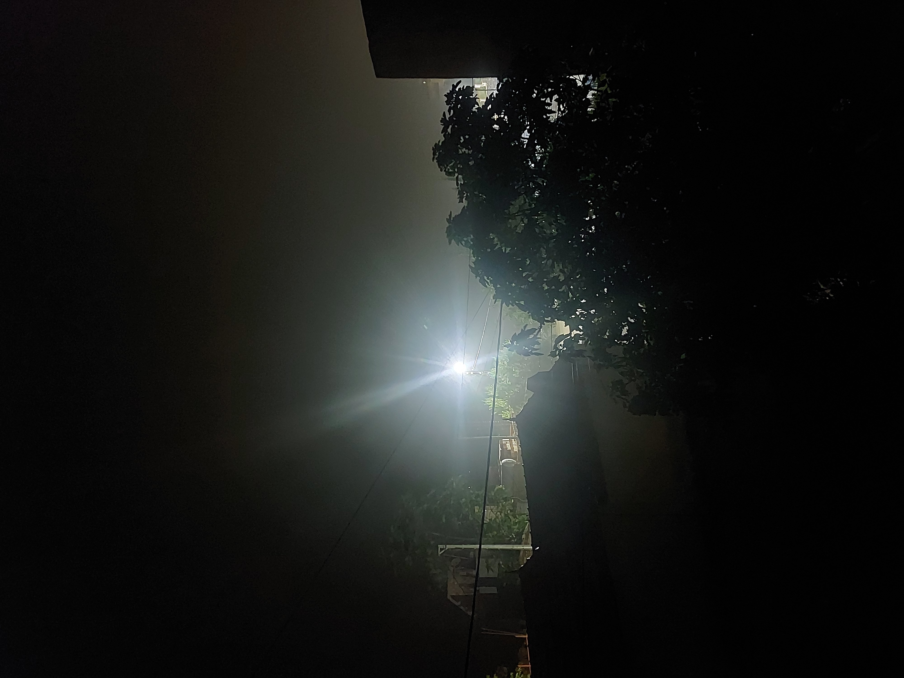

3 : 17
À trois heures du matin,
la chambre est exactement
comme hier.
Le plafond.
La chaise.
Les vêtements
sur le dossier.
La bouteille d'eau.
Mais quelque chose
a changé :
je suis réveillé.
L'angoisse est là.
Elle n'a pas de visage.
Elle ne frappe pas.
Elle s'installe.
Elle me fait croire
que demain contient
une catastrophe
dont je suis le seul
à connaître le secret.
Je respire.
Une fois.
Deux fois.
Je regarde l'heure.
03 : 17.
Puis 03 : 18.
Le temps avance
même quand je n'y arrive pas.
Je pense aux morts.
Aux absents.
À tout ce que j'aurais dû dire.
Puis, derrière la fenêtre,
un oiseau commence à chanter.
Beaucoup trop tôt.
Je souris.
Il ne sait rien
de mon angoisse.
Et c'est peut-être
ce dont j'avais besoin :
quelque chose de vivant
qui continue
sans me demander
d'aller mieux.
Il y a des blessures
qui n’ont pas de sang.
Elles se réveillent
Avant six heures du matin
avant même que le réveil sonne.
L’angoisse connaît
le chemin de la cuisine.
Elle s’assoit avec moi
devant une tasse de café.
Elle ne dit rien.
Elle attend.
Parfois je suis fatigué
d’expliquer ma fatigue.
Alors je souris.
Je réponds :
ça va.
Deux mots faciles
à prononcer
quand tout le corps
dit l’inverse.
Il y a aussi des jours
où la lumière entre par la fenêtre
sans demander la permission.
Je mange quelque chose.
J’écoute une chanson.
Quelqu’un m’envoie un message :
« Tu vas bien ? »
Et pendant quelques secondes
le monde devient habitable.
Je découvre alors
que guérir
ne ressemble pas toujours
à une victoire.
Parfois,
guérir,
c’est simplement
rester là,
respirer,
et accepter
que demain
ne soit pas encore décidé.
Djamel Metref
At Yenni le 22 Août 2026
← Tous les poèmes
3 : 17
Angoisse et solitude · Résilience et espoir